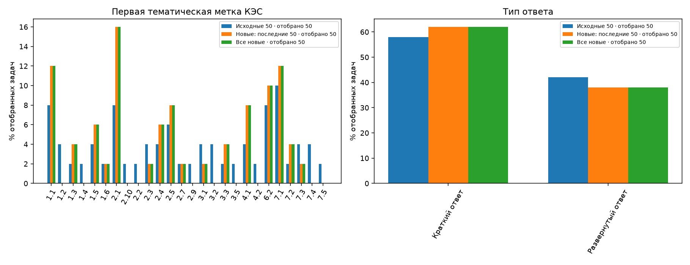
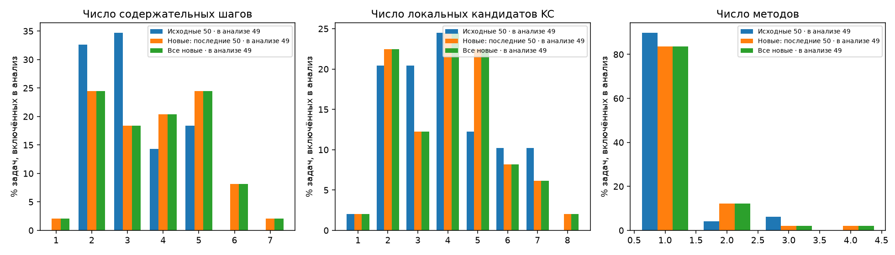
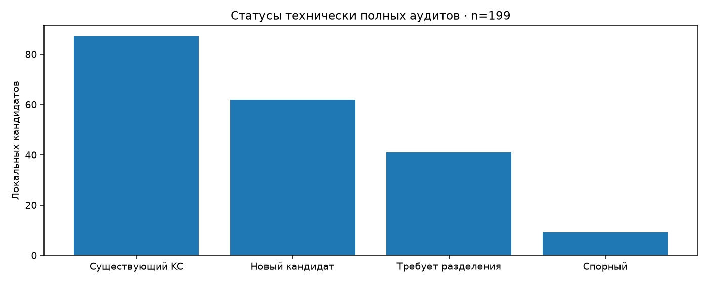
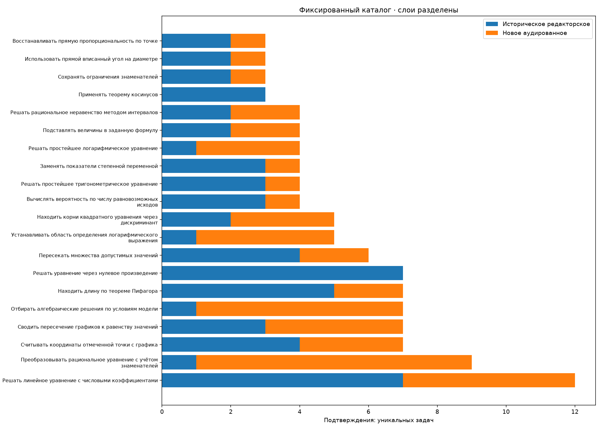

# ФИПИ: Контрольная точка Отобрано новых задач: 50; плановый накопленный объём: 100. Фактическая готовность — в таблице. Сохранённые решения и аудит; внешнего эталона нет. Статус solved не является оценкой точности. | Слой | Выбрано | Автор | Полных пар | В частотах | Подтверждённых определений | Единичные / определения | |---|---:|---:|---:|---:|---:|---:| | Исходные 50: редакторские связи | 50 | 50 | 50 | 49 | 136 | 101/136 | | Все новые: агентный аудит | 50 | 50 | 50 | 49 | 48 | 30/48 | | Последние 50 новых | 50 | 50 | 50 | 49 | 48 | 30/48 | | Смешанный накопленный корпус | 100 | 100 | 100 | 98 | 138 | 76/138 | ## Происхождение активных решений Самостоятельные первоначальные разборы и исправления с обратной связью учитываются раздельно; все исходные попытки сохранены. Их статусы не являются независимыми повторами. - Первоначальное самостоятельное решение: 49. - Исправление после указания ошибки чтения условия: 1. - F416AF: [причина исправления и исходные попытки](../../checks/F416AF-source-discrepancy.json); активное решение получено с обратной связью и не выдаётся за первоначальное самостоятельное. Неполное сопоставление: 45/49 задач основных частот. Несопоставленные локальные кандидаты: 110/197. Это не число уникальных новых навыков. ## Статусы аудита - Существующий KC: 87/199 локальных кандидатов технически полных аудитов. - Новый кандидат: 62/199 локальных кандидатов технически полных аудитов. - Требует разделения: 41/199 локальных кандидатов технически полных аудитов. - Спорный: 9/199 локальных кандидатов технически полных аудитов. ## Исключения из основных частот - eFF32e: исторический partial или исключение прежней рецензией - C41083: блокирующее замечание аудита ## Правила и ограничения - No answer key or external expertise: solved is not accuracy. - New candidates remain task-local; names do not establish identity. - Mixed cumulative frequencies combine historical editorial and independent audited provenance. - Transitions are task-presence across adjacent steps in a single method, excluding self-transitions; not prerequisites. - Composition describes selected tasks; main action frequencies exclude partial/unsolved, technical failures and any blocking audit issue. Новая выборка случайна среди допустимого остатка; исторические 50 выбраны для охвата. Различия состава и процедуры не позволяют причинных выводов. Все метки КЭС и шаблоны — описательные характеристики, не подтверждение одинакового метода. Первая метка КЭС — первая тематическая метка в записи банка, не обязательно главная тема задачи. Условия могут иметь несколько меток. Их [буквальные расшифровки](kes-codebook.csv) сохранены отдельно от KC; соответствие кодификатору конкретного года не установлено. [Карточки и графики](index.html).




[
{
"batch": 1,
"valid": true,
"reason": null,
"path": "checks\\batch-01.json"
},
{
"batch": 2,
"valid": true,
"reason": null,
"path": "checks\\batch-02.json"
},
{
"batch": 3,
"valid": true,
"reason": null,
"path": "checks\\batch-03.json"
},
{
"batch": 4,
"valid": true,
"reason": null,
"path": "checks\\batch-04.json"
}
]